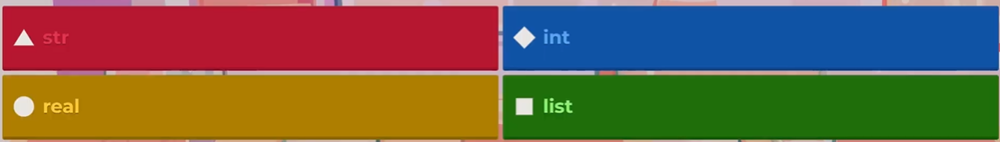
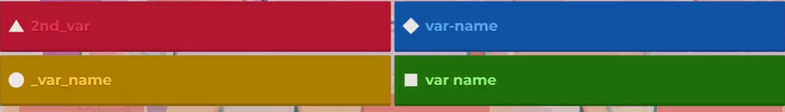
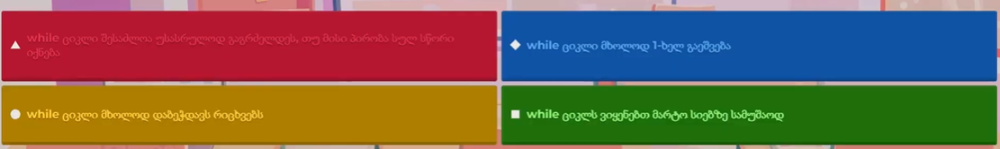
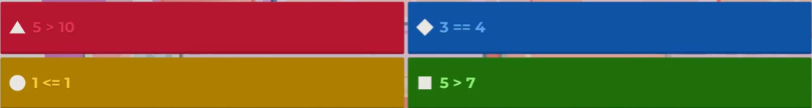
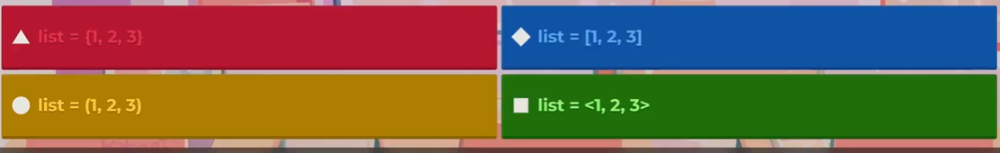

1.რას დაგიბეჭდავს სე კოფი ტერმინალში? ptint(type("Hello, wolrd"))
ეს კოდი გამოიტანს str
2. როგორ შევქმნათ პიტონ კომენტარი?
# this is the comment
3.რისთვის ვიყენებთ range() ფუნქციას?
შევქმნათ დიაპზონი გვწონდეს თანმიმდევრობა
4.სტრინგების კონკატინაციისთვის რომელ ოპერატორს ვიყენებთ?
ჩვენ ვიყენებთ + ოპერტაორს რომ დავაკავშიროთ სტრინეგბი ერთმანეთთან
5 ამ ოთხიდან რომელი არ არის სწორი მონაცემთა ტიპი?

სწორი პასუხია real
6 რომელი ფუნქციის გამოყენებით შეგვიძლია მომხმარებელს შემოვატანინოთ ინფორმაცია?
სწრი პასუხია input()
7.რომელი სიტყვით (keyword)-ით შეიქმნება ციკლი?
სოწრი პასუხია for
8. რომელი ფუნქციით გადავაქცევთ ტექსტურ ინფორმაციას ათწილადად?
სწორი პასუხია float
9.რა დაგვიბეწდავს ეს კოდი:print(2>3)?
ეს კოდი გამოგვიტანს False-ს
10.რომელი კოდით შევქმნით უსასრულო ციკლს?
სწორი პასუხია while:true
11.რას დაგვიბეჭდავს ეს კოდი?:print('hell '+'world')
ეს კოდი გამოიტანს Hello World
12.რას დაგვიბეჭდავს ეს კოდი:print(4%2)?
სწორი პასუხია 0
13.რომელია პიტონის ფაილის სწორი დაბოლოება?
სწორი პასუხია .py
14.რას დაგვიბეჭდავს ეს კოდი:print(10==10)?
ეს კოდი დაგვიბეჭდავს True-ს
15.ამ ოთხიდან რომელია სწორი ცვლადის სახელი?

სწორი პასუხია _var_name
16.რას დაგვიბეჭდავს ეს კოდი: print('5'*3)?
სწორი პასუხია 555
17.რას დაგვიბეჭდავს ეს კოდი:print('hello[-1]')?
სწორი პასუხია O
18.რას დაგვიბეჭდავს ეს კოდი:print(list(range(2,10,2)))
სწორი პასუხია [2,4,6,8]
19.რისთვის ვიყენებთ while ციკლს?
სწორი პასუხია კოდი თავიდან გაეშვას როდესაც ციკლის პირობა იქნება სწორი
20.ამ ოთხიდან რომელი წინადადება არის სწორი While ციკლების შესახებ?

სწორი პასუხია while ციკლი შესაზლოა უსასრულოდ გაგრძელდეს თუ მისი პირობა სულ სწორი იქნება
21.boolean მონაცემთა ტიპის შესაძლო მნიშვნელობებია?
და სწორი პასუხია True და False
22.ამ 4 კოდიდან რომლის მნიშვნელობა არის True?

სწორი პასუხია 1<=1
23.რომელი ოპერატორით ვამოწმებთ ორივე boolean თუ არის True-ს ტოლი?
სწორი პასუხია and
24.როგორ დავბეჭდოთ 30 my_list = [10,20,30,40]
სწორი პასუხია my_list[2]
25.ამ ოთხიდან რომელია სწორი პითონის სია?

სწორი პასუხია list[1,2,3]
26.რას ნიშნავს HTML?
html ნიშნავს hypertext markup language
27.რა არის თეგის დანიშნულება?
საიტის ტექნიკური ინფორმაციის გამოტანა
28.რომელი თეგით შეიქმნება hyperlink?
hyperlink იქმნება a თეგით
29.ყველაზე დიდი სათაური ორმელი თგით შეიქმენაბა?
ყველაზე დიდი თეგი შეიქმნება h1 თეგით
30.რომელი ატრიბუტი გამოიყენება სურათის არტელნატიური ტექსტის დასაწერად?
სწორი პასუხია alt
31.რაში გამოიყენება title თეგი?
ვქმნით html დოკუმენტის სათაურს
32.ხაზის გასაწყვეტად რომელ თეგს ვიყენებთ?
ხაზის გასაწყვეტად ვიყენებთ br თეგს
33.დაულაგებელი სიის შესაქმნელად რომელ ელემენტს ვიყენებთ?
დაულაგებელი სიის შესაქმნელად ვიყნებეთ ელემენტ ul-ს
34.როგორ შევქმანთ checkbox?
სწორი პასუხია input type =chexkbox
35.რომელი ატრიუტიტტ შეგვიძლია css-ის გაწერა?
სწორი პასუხია style
36.ტექსტის შესატანი ველი როგორ შევქმანთ?
სწორი პასუხია input type=("text")
37.რომელი ატრიბუტით შევუერთებთ hyperlink-ის მისამართს
სწორი პასუხია href
38.რას წარომადგენს em თეგი?
სწორი პასუხია დახრილი ტექსტის<
39.რომელი თეგიტ შეიქმნება form?
სწორი პასუხია